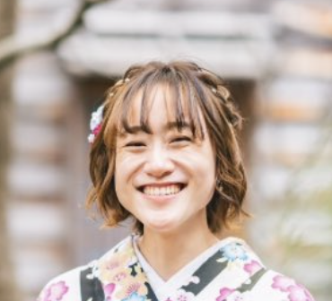
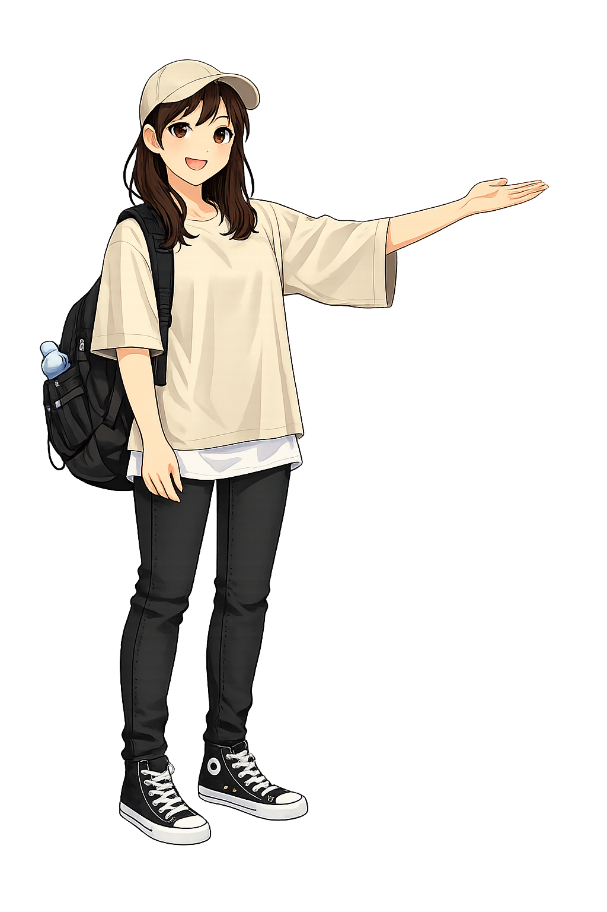
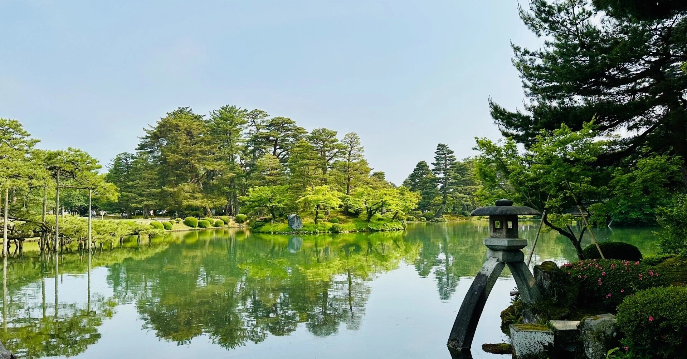
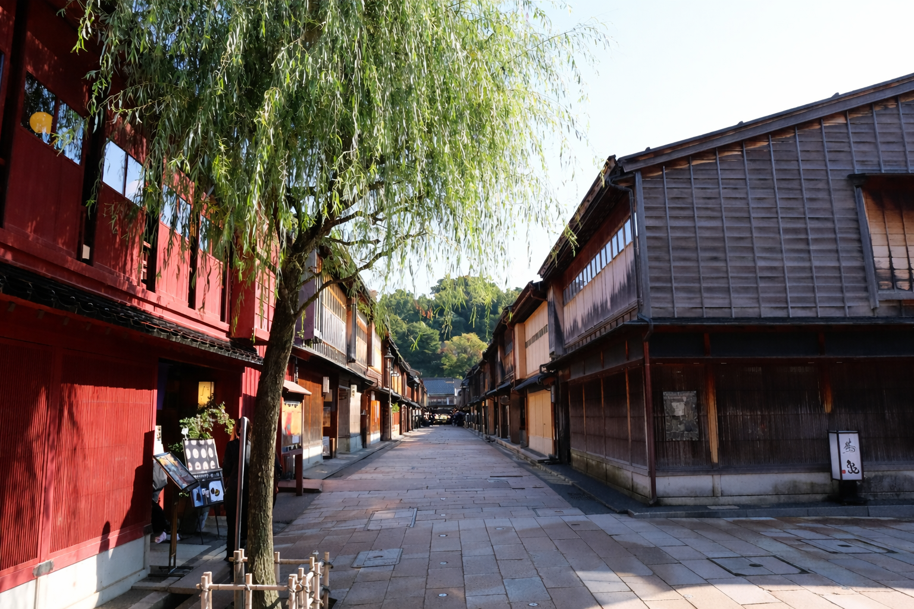
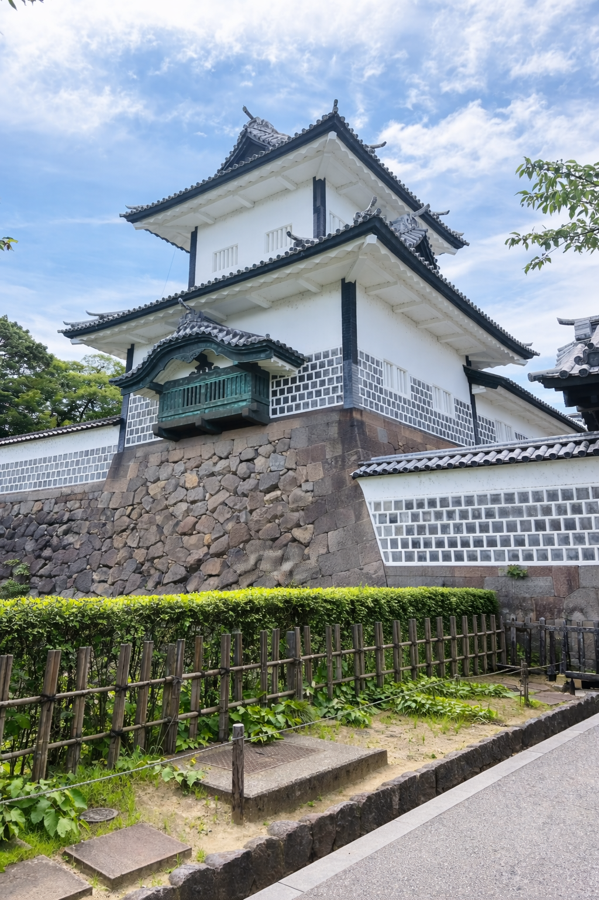

“Yuri made our time in Kanazawa feel calm, personal, and truly memorable.”
— Guest from Australia
Not just famous spots,
but the small moments of everyday life.
A walk through the city,
as if you were visiting a friend.

I have lived in Kanazawa for over 23 years, and I truly love this city.
I enjoy sharing not only the famous places, but also the quiet moments and local life that many visitors might miss.
If you are looking for a calm and personal experience, I would be happy to walk with you.
“I love the moment when someone quietly says — this is special.”


Walk through one of Japan’s most beautiful gardens at a relaxed pace.

Experience the charm of traditional tea houses and hidden streets.

Discover history and architecture surrounded by peaceful scenery.
Kind words from guests who spent time with Yuri in Kanazawa.
“Yuri made our time in Kanazawa feel calm, personal, and truly memorable.”
“It felt less like a tour and more like being gently welcomed into the city.”
“Her warmth and local knowledge made the whole experience special.”
If you are looking for a calm and personal way to experience Kanazawa, I would be happy to guide you.